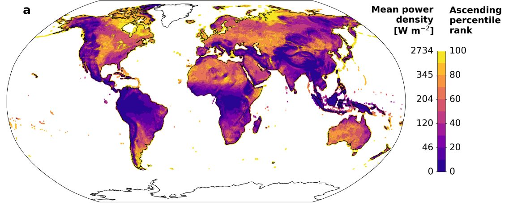
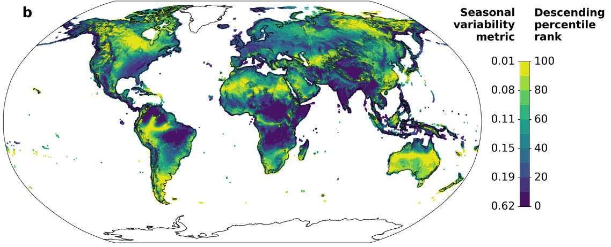
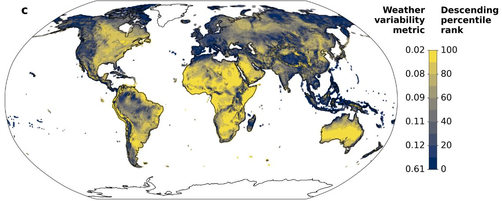
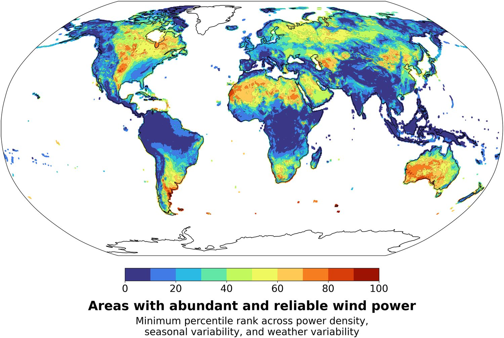
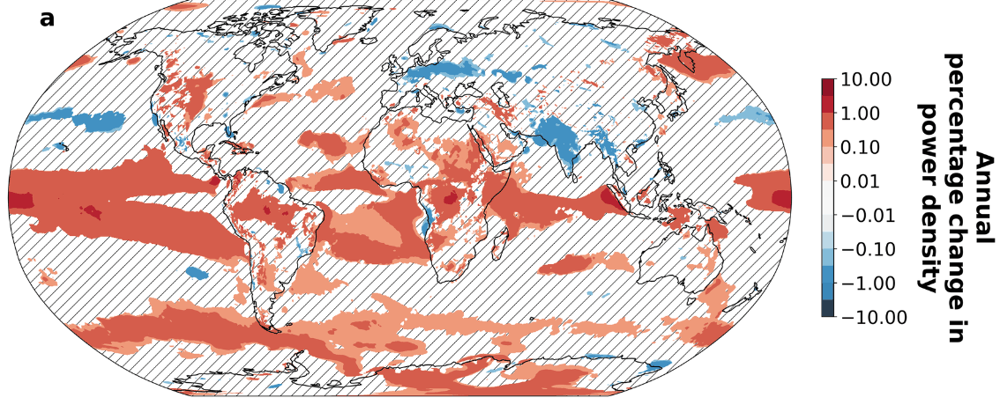
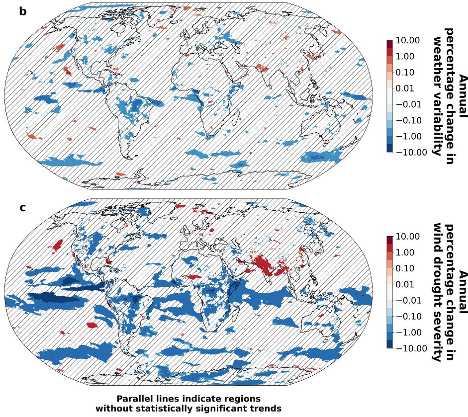
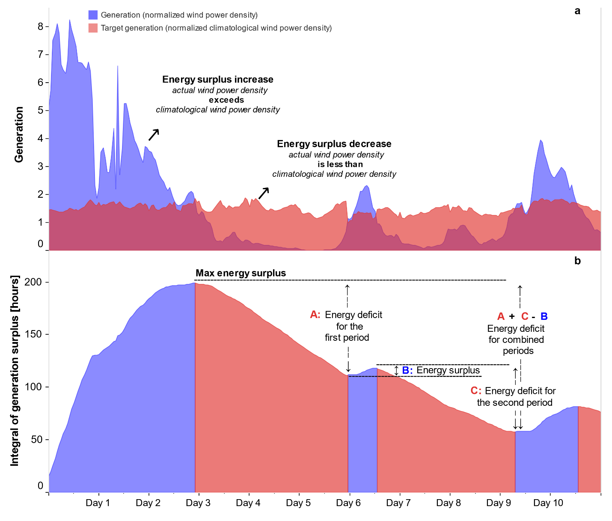

Northern Europe experienced a period of very low winds in 2021, adversely impacting Europe’s ability to generate climate-friendly electricity.
This led us to ask several questions:
— Is this level of variability in wind resources consistent with historical variability, or has this variability been increasing as a result of climate change?
— Where in the world are the winds most abundant and most reliable?
Enrico Antonini, who was a postdoc in our group, set about answering these questions by analyzing historical reconstructions of weather since 1979. He led the production of a very nice paper published in the “Nature family” journal communications earth & environment.
Abundant and reliable
We have all seen maps of average wind power at different locations, but where are winds both abundant and reliable?

The areas in yellow above have strong winds, on average, whereas the areas in purplish colors have relatively weak winds.
Some places can have strong winds on average, but experience a large seasonal cycle. For example, some places have more wind in the winter and others more wind in the summer. Enrico Antonini and colleagues developed the following map illustrating the magnitude of the seasonal cycle, indicating how much the average winds shown above vary from season to season. That map looks like this:

Details of the metric and methodology are explained in the paper, and some comments on the methods are offered below. Regardless, the areas in yellow above have winds that are relatively consistent from season to season, whereas the areas in blue exhibit a high degree of variation from season to season.
Some areas might have strong winds that are relatively consistent from season to season, but these areas might exhibit a large amount of weather variability. That is, due to weather variability, there could be weeks without much wind even if a season would typically be windy.
To estimate the degree of weather variability, Antonini and colleagues developed a metric of weather variability that indicated how much a typical year’s weather might depart from what you would expect on average. (Details in the paper, and some more discussion below.)

In the above figure, the yellow areas exhibit little weather variability, whereas in the dark areas, the winds you actually get can differ markedly from what you would expect for that location and time of year.
Everyplace has its own particular needs, and certainly transmission and storage can be used to smooth out some variability in wind power production. Nevertheless, other things equal, one would like wind power that could provide a steady and reliable supply of electricity.
Now that we have maps of annual average wind power, seasonality of wind power, and weather variability in wind power, how do we combine these three metrics on a single map? Wind power is in units of power per square meter, whereas our variability metrics end up being in units of hours of storage that would be needed at mean demand levels. You can’t add together metrics with different units. You can multiply or divide them but that doesn’t make sense in this case.
We settled on the idea of percentile rank ordering each location from best (100th percentile) to worst (0th percentile) on each dimension, where best is highest mean power, lowest seasonal variability, and lowest weather variability. If someplace were the best on all of these metrics the minimum percentile ranking across the three metrics would be 100. If someplace were the worst on any of these metrics, the maximum across these three metrics would be zero. For someplace to have abundant and reliable winds (both with respect to seasonality and weather), the minimum percentile rankings should be high on all three metrics. We made a map based on this concept:

One thing that came out of this analysis is that parts of the American Midwest are among the places in the world with most abundant and reliable winds. There are other good places in Asia, in the Sahara and southern Africa, in Australia, and Argentina.
Obviously variants of this analysis could be performed making different assumptions about storage, transmission, variation in demand and so on. We hope others will perform these analyses.
Trends in abundance and reliability
One of the things that motivated this study was the deep wind drought in Northern Europe in 2021. Are these kinds of wind drought just a product of normal variability or is there an increasing trend in wind power or its reliability that might be associated with climate change?
Before we begin this discussion, it is probably a good idea to point out a few things:
- It is possible that a trend is real and driven by real underlying physical causal factors, but the trend is masked by so much variability that the trend is not showing up as statistically significant on commonly used tests.
- Even if there is a trend, the trend itself could be due to natural variability or any of a large number of causes. Further, there could be a climate-induced trend that is masked by natural variability of the opposite sign.
In short, our tests of statistical significance do not lead to any determinative claim for causality in any direction. Absence of evidence is not evidence of absence.
When we look for trends in annual mean wind speeds over the period from 1979 through 2022, we get a map that looks like this:

From the above figure we see that winds tend to be getting stronger in the equatorial region and in parts of the Southern Ocean. I am somewhat hesitant to ascribe too much significance to trends observed over land because we would expect 5% of the land area to show up as statistically significant at the 0.05 level just by chance. Nevertheless, there is an indication of a strengthening of winds in parts of the American Midwest and a weakening of wind over Northern Europe and India.
More investigation is needed to determine if these trends are real, and if so, whether climate change is an important causal factor.

We found very little evidence of trends in weather variability in wind power. However, winds seem to be strengthening in the American Midwest and weakening over much of India. The result is that wind droughts, according to the metric we discuss below, are becoming less severe in the American Midwest and more severe over parts of India.
Energy metric of wind drought
There have been previous studies of wind drought (periods of low wind) that use arbitrary cut-offs of different sorts, such as how low the winds need to fall, or how long the low winds need to last, to be considered a wind drought.
Sometimes there can be an extended period of low winds that is interrupted by a single windy day or windy hour. Or there can be an extended period of relatively low winds but no time when the winds are extremely low. We wanted to develop a metric that could handle all of these cases in a consistent way.
We discuss wind droughts in terms of an energy deficit relative to some background case. For example, imagine we want to characterize the amplitude of the seasonal cycle in winds. We could ask: If we had this annual cycle repeating, how much energy storage would we need to yield a constant output of energy at the annual mean rate?
If the winds were steady, you would need no storage. If the winds were 8760 times the mean for 1 hour and then zero for the rest of the year, you would need an amount of storage nearly equal to the entire annual wind output. Intermediate cases would need intermediate amounts of storage.
To estimate weather variability relative to seasonal averages, we construct a year where wind power follows the typical average profile for different times of the year, and then we ask how much storage would be needed to offset weather variability and provide the amount of power from climatologically expected winds.
The figure below illustrates this methodology for a more realistic case, where the blue curve in panel a represents wind generation and the red curve represents the required output. When the blue curve is greater than the red curve, excess power is available and the power could be thought of as adding to storage. When the red curve is greater than the blue curve, that means the wind energy is insufficient to meet the target and so energy must come out of storage.
Note that the illustrated period of energy deficit is interrupted by a brief period of excess generation on Day 6. However, the amount of storage that would be needed to make up for the energy deficit would be the sum of the two areas where the red is above the blue from Day 3 to Day 10, less the excess generation that occurred on Day 6.
The amount of storage needed is found by calculating the difference in energy between each local minimum in the integral of generation minus target and the preceding global maximum in this integral (as illustrated in panel b).

Details of this methodology are described in Antonini et al. (2024) and the associated Supplementary Material. All codes, and high resolution versions of the figures shown here (and other figures) are available at the associated github repository.
Closing remarks
I am very much proud of this paper. I think Enrico Antonini did a fine job pulling all of this together. I also thank our co-authors who each helped in various ways.
In our group, we like to do geophysical studies that are relevant to energy systems. We chose steady power because we wanted this to be a geophysically-oriented study focused on basic principles and methodology. Our computer codes are publicly available and ready to be modified for specific applications.
It would have been easy for us to incorporate costs of turbines, and real electricity demand curves, and consider inefficiencies and costs of batteries and so on. Consideration of transmission would be a bit more challenging but could be done. However, a study like this that is purely geophysical will stand the test of time.
Studies that consider more things like real demand profiles, technical characteristics, and costs are very valuable, but will tend to age as these properties change over time. Studies could also consider mixes of wind and solar and perhaps other generation sources. We encourage others to do such studies. We may end up doing some of these studies ourselves.
Of course, we do not expect people to decide whether or not to build wind farms based on our study alone. However, we hope that our study provides incentive for people to look more carefully at the potential for wind power in areas that we have identified as having abundant and reliable wind resources.
Where to read more
- The publication this post is about: Identification of reliable locations for wind power generation through a global analysis of wind droughts (Antonini et al., 2024 · Communications Earth & Environment)
- Published article (doi:10.1038/s43247-024-01260-7)
- Can wind and solar power reliably meet electricity demand?